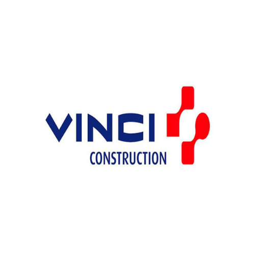
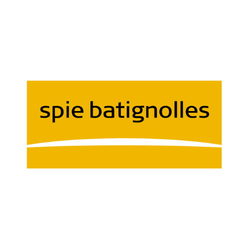
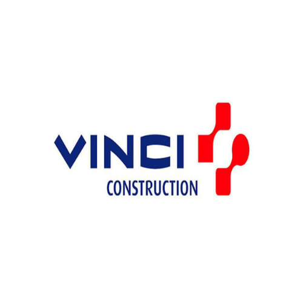
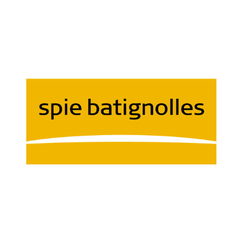

Débouchez vos canalisations de tout engorgement avec notre service de dégorgement dédié. Dotés
d'une expertise technique pointue et d'une approche attentive, nous nous engageons à restaurer la
fluidité de vos canalisations.
Offrez à vos canalisations un nettoyage en profondeur grâce à notre service de curage. Dotés
d'une expertise technique pointue, nous nous engageons à éliminer
efficacement les impuretés, les dépôts et les résidus accumulés dans vos réseaux. Le curage régulier de
vos canalisations permet de prévenir les obstructions et les dysfonctionnements.
Plongez dans une perspective inédite de vos installations grâce à notre service de passage de caméra.
Avec une expertise technique pointue et une approche méticuleuse, nous vous offrons une vision détaillée
de l'intérieur de vos canalisations.
Avec une expertise spécialisée dans le pompage de fosses septiques, de bacs à graisse et le traitement
des eaux usées, nous vous proposons des services complets pour assurer la propreté et le bon
fonctionnement de vos installations.
Optimisez le contrôle de vos eaux usées avec notre service de pompe de relevage de pointe. Que ce soit
pour les eaux usées domestiques ou industrielles, notre équipe dédiée assure une gestion efficace grâce
à nos pompes de relevage de qualité supérieure.
En cas d'urgence, nous sommes là pour vous. Notre équipe d'experts en assainissement se déplace
rapidement et efficacement pour répondre à vos besoins critiques. Que ce soit pour un débouchage urgent,
une inspection par caméra ou toute autre intervention nécessaire, comptez sur nous pour intervenir
rapidement.
Débouchage canalisations : Débouchez vos canalisations de tout engorgement avec notre
service de debouchage de canalisation. Dotés
d'une expertise technique pointue et d'une approche attentive, nous nous engageons à restaurer la
fluidité de vos canalisations.
Nettoyage canalisations : Offrez à vos canalisations un nettoyage en profondeur grâce à
notre service de curage. Le curage
régulier de vos canalisations permet de prévenir les
obstructions et les dysfonctionnements. Faites confiance à notre équipe pour assurer le bon
fonctionnement de votre assainissement individuel.
Camera canalisations : Plongez dans une perspective inédite de vos installations grâce à
notre service de passage de caméra.
Avec une expertise technique pointue et une approche méticuleuse, nous vous offrons une vision détaillée
de l'intérieur de vos canalisations.
Pompage : Avec une expertise spécialisée dans le pompage de fosses septiques, de bacs à
graisse et le traitement
des eaux usées, nous vous proposons des services complets pour assurer la propreté et le bon
fonctionnement de vos installations.
Pompe de relevage : Optimisez le contrôle de vos eaux usées avec notre service de pompe
de relevage de pointe. Que ce soit
pour les eaux usées domestiques ou industrielles, notre équipe dédiée assure une gestion efficace grâce
à nos pompes de relevage de qualité supérieure.
Urgence : En cas d'urgence, nous sommes là pour vous. Notre équipe d'experts en
assainissement se déplace
rapidement et efficacement pour répondre à vos besoins critiques. Que ce soit pour un débouchage urgent,
une inspection par caméra ou toute autre intervention nécessaire, comptez sur nous pour intervenir
rapidement et résoudre vos problèmes d'assainissement.
UNE EQUIPE PROFESSIONNELLE ET DES EQUIPEMENTS MODERNES
Au cœur de notre approche en assainissement, une équipe d'experts dédiée et des équipements modernes de
pointe garantissent des solutions efficaces et durables. Chacun de nos professionnels contribue à
l'excellence de nos services, tandis que nos technologies innovantes assurent des opérations optimales. Que
ce soit pour la gestion des eaux usées, le curage des canalisations, la vidange de fosses septiques ou le
traitement des eaux usées, notre alliance entre professionnalisme et équipements modernes répond à tous vos
besoins en assainissement. Faites confiance à notre entreprise d'assainissement pour des interventions
telles que le débouchage de fosses septiques, l'assainissement individuel et l'assainissement collectif,
ainsi que le traitement complet de vos installations.
NOS TARIFS
COMPÉTITIFS
Chez Assainissement 75, nous vous garantissons des services d'assainissement de première qualité à des
tarifs attractifs. Notre engagement est de vous fournir des solutions efficaces qui répondent à vos besoins
tout en respectant votre budget.
prix vidange fosse septique - prix assainissement individuel - prix debouchage canalisation - prix
debouchage wc - inspection caméra canalisation prix - prix hydrocurage - prix pompe de relevage - Vidange
micro station tarif - fosses septiques prix - prix nettoyage fosse septique - travaux
assainissement prix - prix nettoyage bac à graisse
POURQUOI CHOISIR ASSAINISSEMENT 75 POUR VOS TRAVAUX DANS PARIS ?
Lorsque vous planifiez des travaux d'assainissement en Île-de-France, opter pour Assainissement 75
représente un gage d'excellence et de tranquillité d'esprit. Notre entreprise se distingue par son
engagement inébranlable envers la qualité, la fiabilité et la satisfaction client dans le domaine de
l'assainissement. Forte de nombreuses années d'expérience, nous avons bâti une solide réputation basée sur
l'expertise de notre équipe dévouée. Chez Assainissement 75, chaque projet d'assainissement, incluant le
curage des canalisations, la vidange de fosses septiques et le traitement des eaux usées, est pris en charge
avec le plus grand soin, du début à la fin.
NOS CONTRATS VOUS LIBÈRENT DE TOUS SOUCIS
CONTRAT PONCTUELS
CONTRAT ANNUELS
Avec nos contrats d'assainissement personnalisés, libérez-vous de toute inquiétude lors de vos travaux. Chez
Assainissement 75, nous comprenons l'importance de garantir la tranquillité d'esprit à nos clients, même
dans le domaine de l'assainissement. Nos contrats sont spécialement conçus pour offrir une transparence
totale, détaillant chaque étape du processus, les délais et les coûts associés à vos travaux, qu'ils soient
ponctuels ou annuels. Nous nous engageons à vous fournir un service fiable et de haute qualité, englobant le
curage des canalisations, la vidange de fosses septiques et le traitement des eaux usées.
L’ENTREPRISE D’ASSAINISSEMENT QUI VOUS SIMPLIFIE LA VIE
Aquaserv, expert de l'assainissement à Paris depuis plus de deux décennies, intervient tant auprès des
particuliers que des professionnels pour résoudre les urgences. Que ce soit des
canalisations obstruées, des équipements sanitaires défaillants, ou des odeurs désagréables, les situations
peuvent varier, mais notre réactivité demeure constante.
En cas de proximité avec un égout public, nous procédons à l'évacuation nécessaire, acheminant les eaux
usées jusqu'au point de raccordement du canal collectif en bordure de la propriété. En l'absence d'égout
public, notre solution consiste à installer un réservoir d'eau complet, assurant le traitement des eaux
grises et noires de la maison. La qualité du raccordement et du système d'épuration, notamment par tranchée
et filtre à sable, est une garantie de notre expertise.
Aquaserv assure une disponibilité totale, 24h/24 et 7j/7, weekends et jours fériés inclus.
En plus des
interventions d'urgence, notre entreprise peut effectuer le remplacement des tuyaux, la rénovation des
équipements et égouts, l'adaptation du réseau d'égouts, le nettoyage et l'entretien des collecteurs, ainsi
que la vidange des stations d'épuration.
NOS VALEURS
QUALITÉ
SYNONYME DE PASSION
La règle d’or de l’entreprise est de rendre à la clientèle un travail de qualité. Le respect du savoir faire
et l’écoute permettent à eux seuls d’avoir une satisfaction client, et un résultat pérenne.
PASSION
SYNONYME DE PLAISIR
La passion du travail, passe par le plaisir. Une réalisation réussie est la clé d’un client satisfait. Chaque
projet est unique et demande une personnalisation qui commence par l’écoute et le conseil.
ENGAGEMENT
SYNONYME DE RESPECT
L’engagement mutuel est une forme de respect. Le respect des lieux et de vous même garantissent un travail
dans les meilleurs délais. Tout cela afin que vous puissiez vous sentir heureux dans vos locaux le plus
rapidement possible.
CONFIANCE
SYNONYME DE SECURITÉ
La confiance dans une entreprise est le socle de la réussite. L’écoute des besoins de chacun ainsi que le
conseil permet de créer un climat de confiance. Le résultat de cette confiance réciproque donnera une valeur
ajoutée à vos intérieurs.


 


